O problema
Uma rede de hospitais especializados no atendimento à mulher precisa de um sistema de apoio ao diagnóstico capaz de acelerar a triagem. Esta análise entrega a base de Machine Learning dessa solução: a classificação de tumores de mama em malignos ou benignos a partir de características morfológicas de núcleos celulares extraídas de punção aspirativa por agulha fina.
O modelo é ferramenta de triagem e segunda opinião. O diagnóstico final é sempre responsabilidade do médico. Essa premissa define a métrica prioritária e a exigência de explicabilidade.
A base de dados
Breast Cancer Wisconsin (Diagnostic). Dez medidas do núcleo celular — raio, textura, perímetro, área, suavidade, compacidade, concavidade, pontos côncavos, simetria e dimensão fractal — cada uma em três variantes: média da amostra (_mean), erro padrão (_se) e média das três piores células (_worst).
A única inconsistência é estrutural: o cabeçalho do CSV termina em vírgula, gerando uma coluna vazia que é descartada no carregamento. Não há valores ausentes reais.
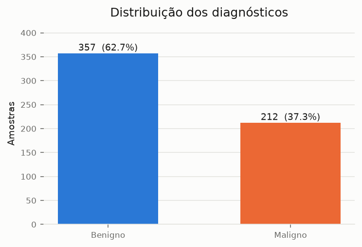
Análise exploratória
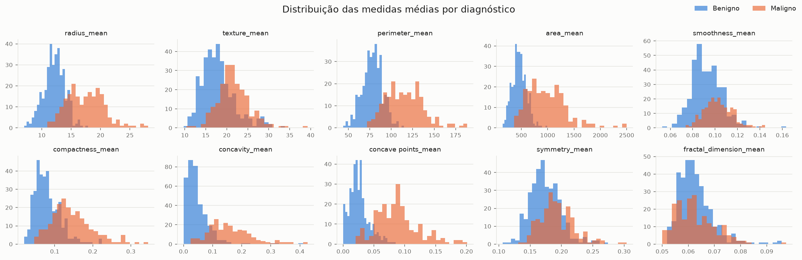
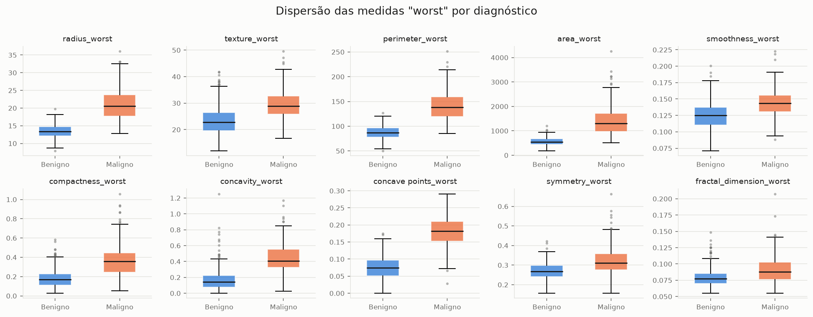
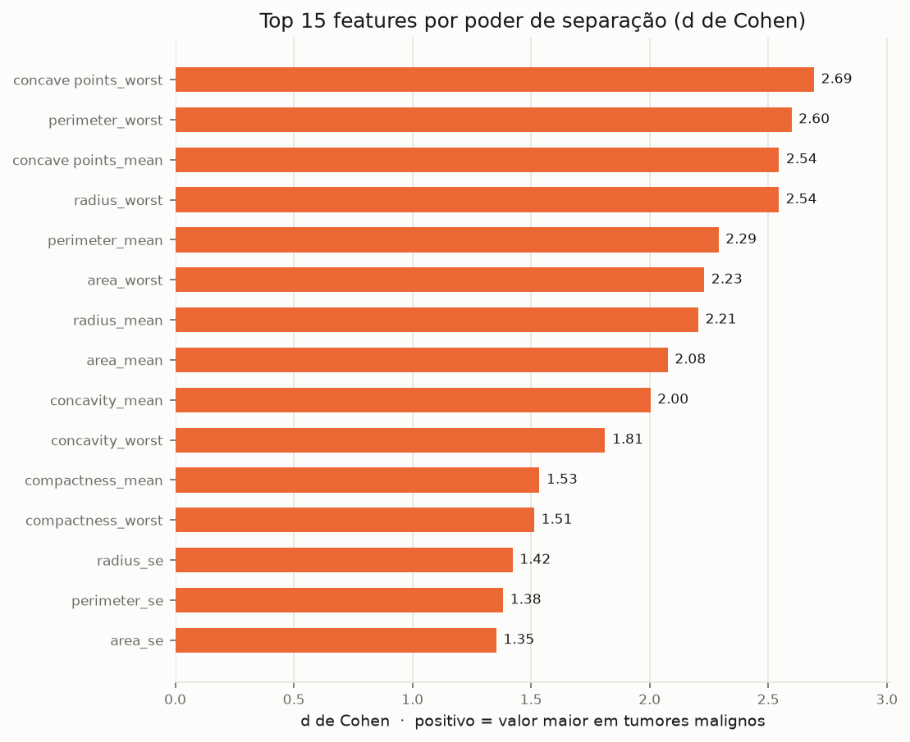
Pré-processamento e correlação
Pipeline do scikit-learn com imputação de mediana (defensiva) e StandardScaler. A padronização vive dentro do pipeline: ajustá-la antes da separação treino/teste faria a média e o desvio carregarem informação do teste — vazamento de dados que infla as métricas.
| Conjunto | Amostras | Benigno | Maligno | Proporção maligno |
|---|---|---|---|---|
| Treino | 455 | 285 | 170 | 0,3736 |
| Teste | 114 | 72 | 42 | 0,3684 |
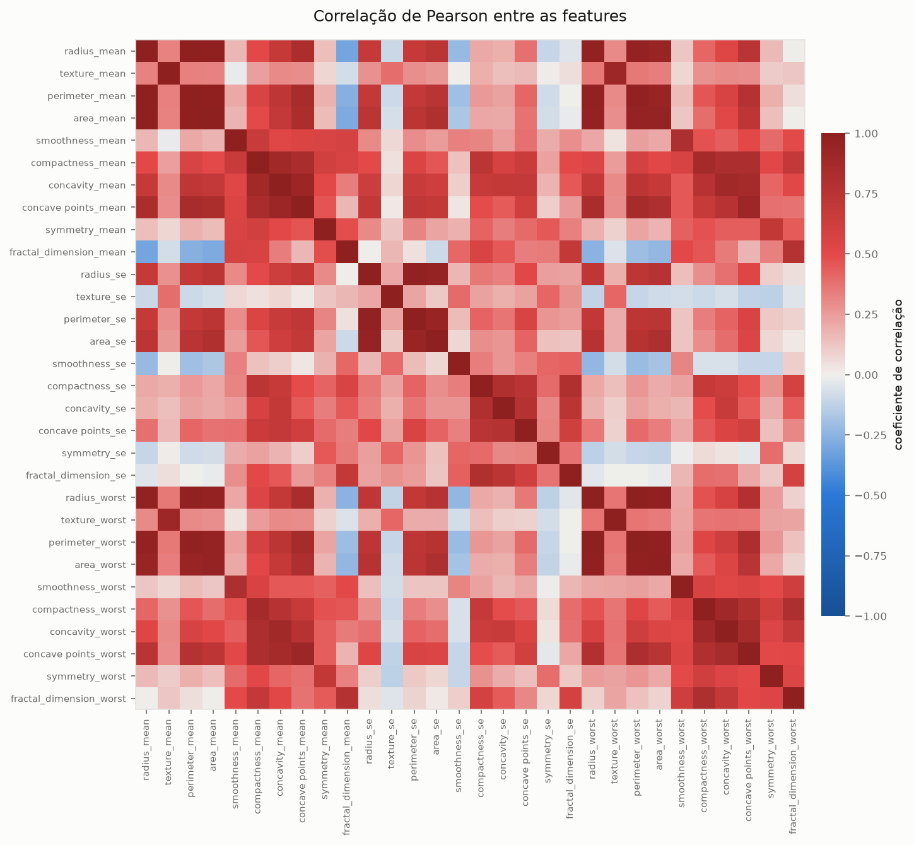
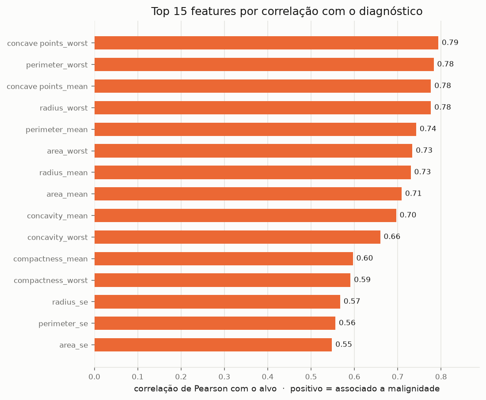
Modelagem
Três técnicas com fundamentos distintos: Regressão Logística (baseline linear e interpretável), KNN (não paramétrico, sensível a escala) e Random Forest (não linear, com importância nativa). A comparação usa validação cruzada estratificada de 5 folds dentro do treino; o conjunto de teste permanece intocado.
A seleção usa F1, não recall puro: otimizar recall isolado premiaria um classificador que chama quase tudo de maligno. O recall é otimizado depois, pelo ajuste do limiar.
| Modelo | Acurácia | Precisão | Recall | F1 | AUC |
|---|---|---|---|---|---|
| Regressão Logística | 0,974 | 0,977 | 0,953 | 0,964 | 0,996 |
| KNN | 0,965 | 0,988 | 0,918 | 0,951 | 0,987 |
| Random Forest | 0,960 | 0,958 | 0,935 | 0,946 | 0,988 |
Resultados no conjunto de teste
| Modelo | Acurácia | Precisão | Recall | F1 | AUC | Falsos negativos |
|---|---|---|---|---|---|---|
| Regressão Logística | 0,965 | 0,975 | 0,929 | 0,951 | 0,996 | 3 |
| Random Forest | 0,965 | 1,000 | 0,905 | 0,950 | 0,995 | 4 |
| KNN | 0,939 | 0,973 | 0,857 | 0,911 | 0,983 | 6 |
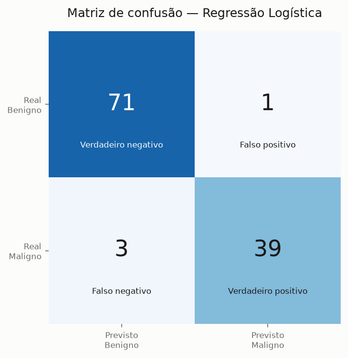
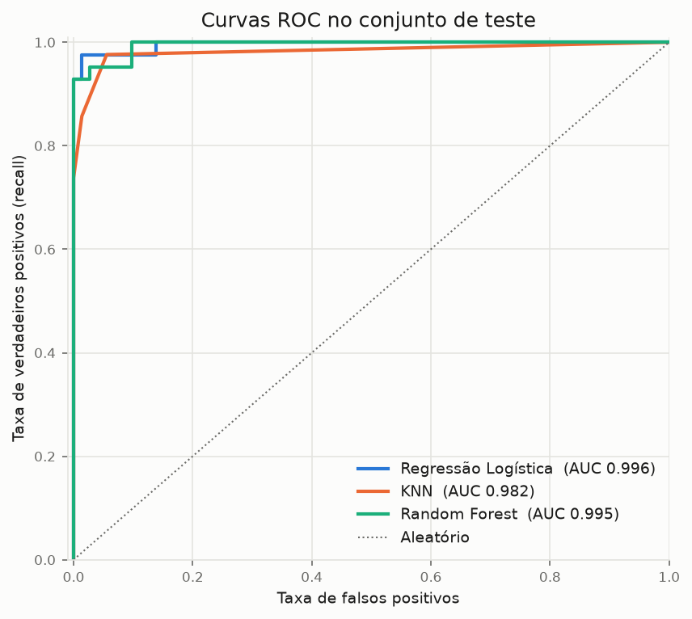
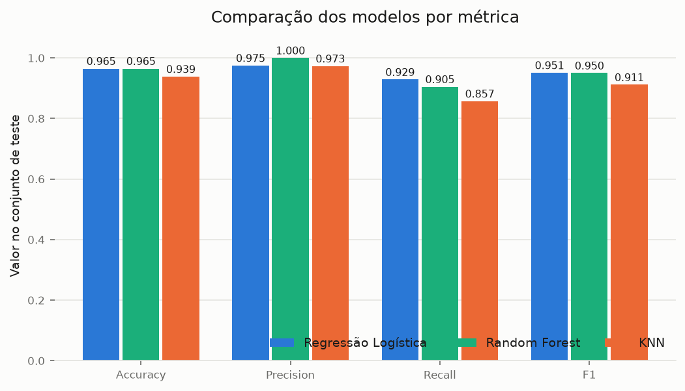
Ajuste do limiar de decisão
O limiar de 0,5 é apenas a convenção do predict(), não uma escolha clínica. Baixá-lo para 0,30 melhora todas as métricas ao mesmo tempo e reduz os falsos negativos de 3 para 1, sem aumento de falsos positivos.
| Limiar | Recall | Precisão | F1 | Falsos negativos | Falsos positivos |
|---|---|---|---|---|---|
| 0,2000 | 0,9762 | 0,9111 | 0,9425 | 1 | 4 |
| 0,3000 | 0,9762 | 0,9762 | 0,9762 | 1 | 1 |
| 0,4000 | 0,9524 | 0,9756 | 0,9639 | 2 | 1 |
| 0,5000 | 0,9286 | 0,9750 | 0,9512 | 3 | 1 |
| 0,6000 | 0,9048 | 1,0000 | 0,9500 | 4 | 0 |
| 0,7000 | 0,9048 | 1,0000 | 0,9500 | 4 | 0 |
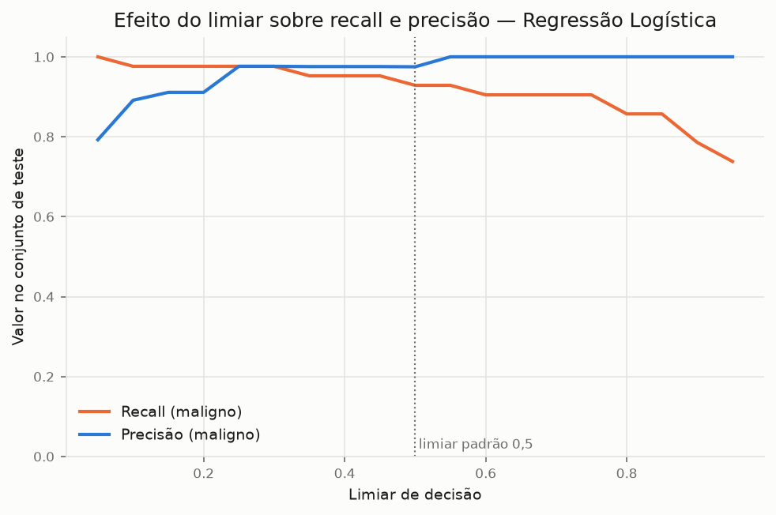
Explicabilidade
Um sistema de apoio ao diagnóstico que não explica sua previsão não é utilizável na prática: o médico precisa poder concordar ou discordar com base no raciocínio. Três técnicas complementares foram aplicadas.
| Feature | Coeficiente | Razão de chances |
|---|---|---|
| texture_worst | 1,434 | 4,196 |
| radius_se | 1,233 | 3,433 |
| symmetry_worst | 1,061 | 2,890 |
| concave points_mean | 0,953 | 2,593 |
| concavity_worst | 0,911 | 2,488 |
| area_se | 0,909 | 2,482 |
| compactness_se | -0,907 | 0,404 |
| area_worst | 0,900 | 2,461 |
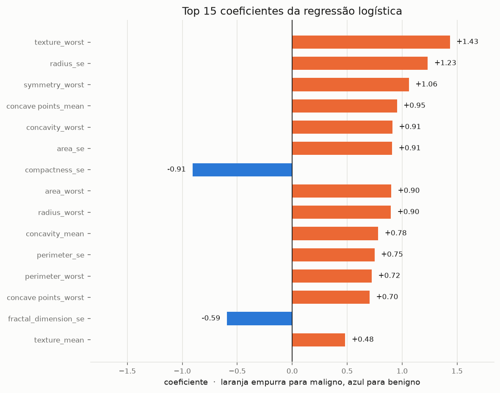
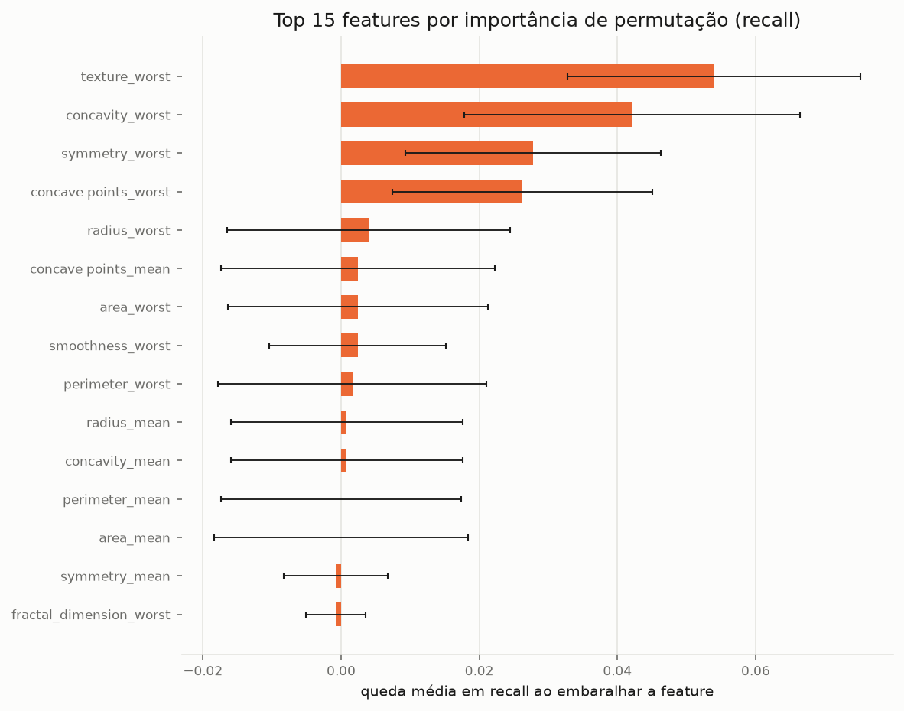
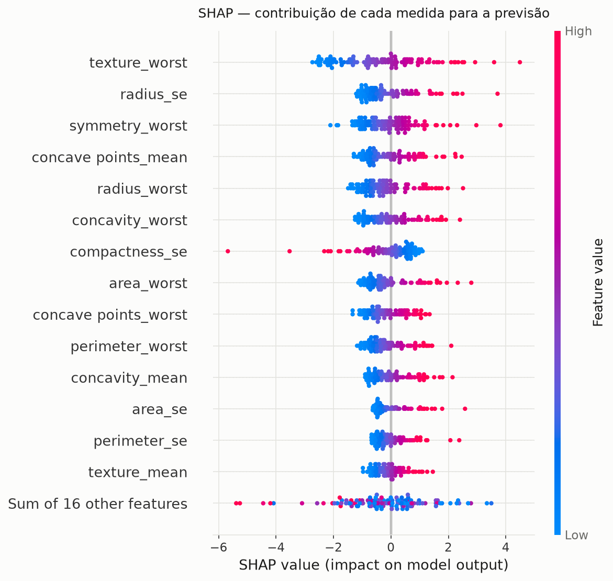
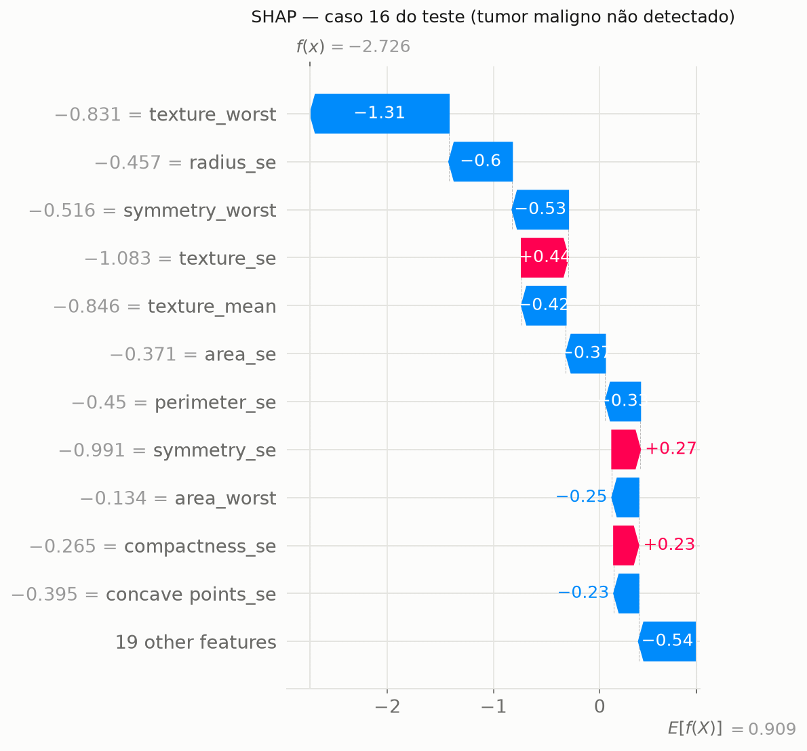
Leitura crítica
O modelo atinge desempenho alto e estável, com explicações coerentes com a morfologia celular descrita na literatura. Ainda assim, três limites são intransponíveis com esta base:
- 569 casos de uma única fonte. O desempenho pode degradar em outra população ou com outro protocolo de coleta.
- As features já foram extraídas por um especialista a partir das imagens. O sistema não parte de dados crus: depende de uma etapa manual anterior.
- Existem tumores malignos morfologicamente discretos, como mostra o caso analisado por SHAP. Nenhuma quantidade de ajuste resolve isso, porque a informação necessária não está nas medidas disponíveis.
Uso adequado: triagem e priorização de fila, segunda opinião e sinalização de casos discordantes — sempre com o laudo final assinado por um médico.
A base de imagens
| Classe | Imagens | Proporção |
|---|---|---|
| benign | 437 | 0,5603 |
| malignant | 210 | 0,2692 |
| normal | 133 | 0,1705 |
Resultados no conjunto de teste
| Modelo | Acurácia | F1 macro | Recall maligno | Precisão maligno | Malignos não detectados |
|---|---|---|---|---|---|
| MobileNetV2 (ajuste fino) | 0,839 | 0,821 | 0,900 | 0,771 | 3 |
| MobileNetV2 (transferência) | 0,759 | 0,751 | 0,767 | 0,622 | 7 |
| CNN do zero | 0,562 | 0,240 | 0,000 | 0,000 | 30 |
Análise visual
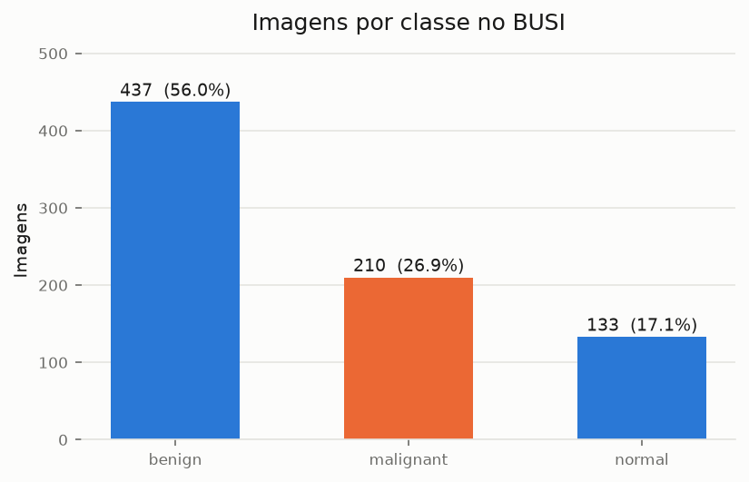
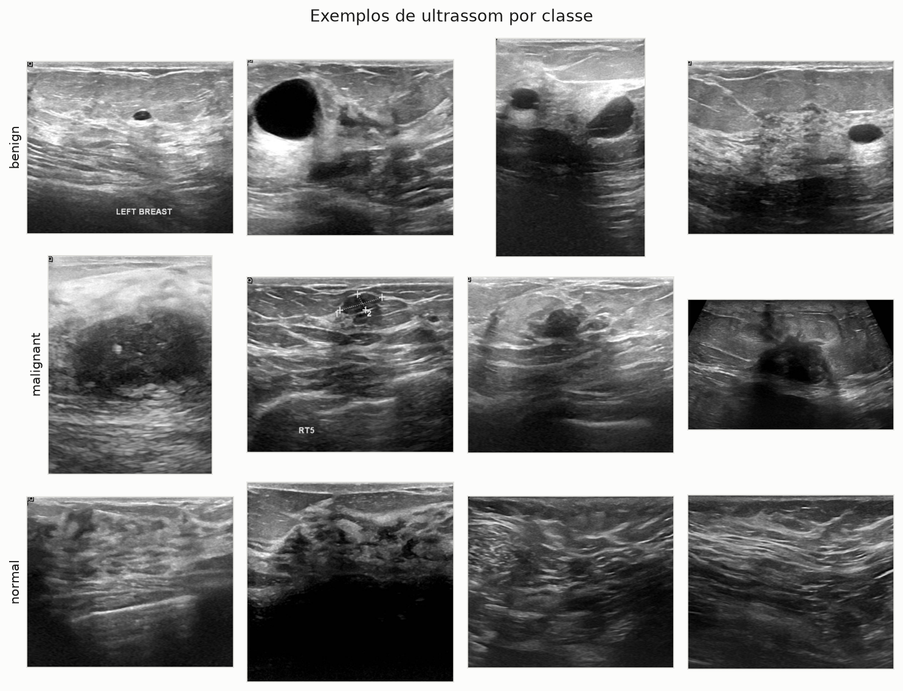
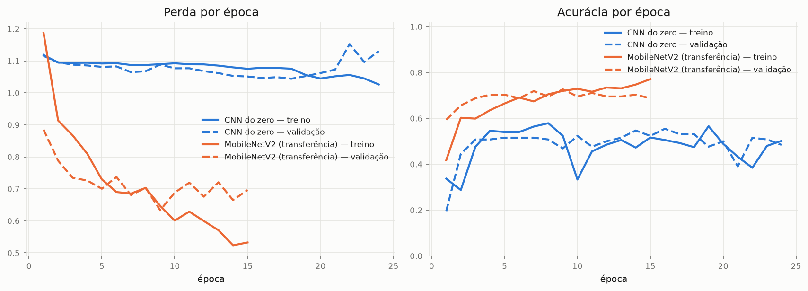
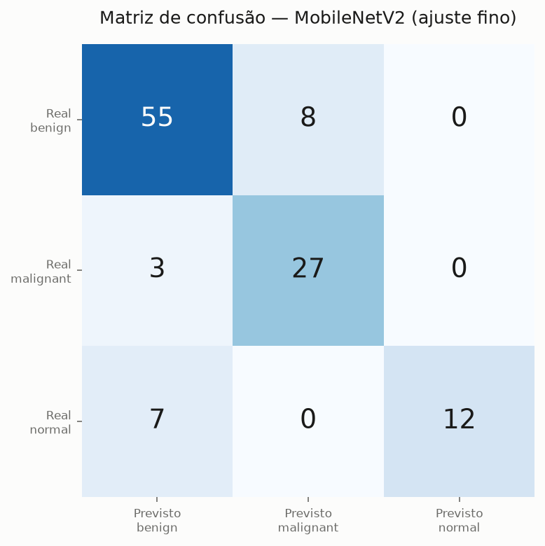
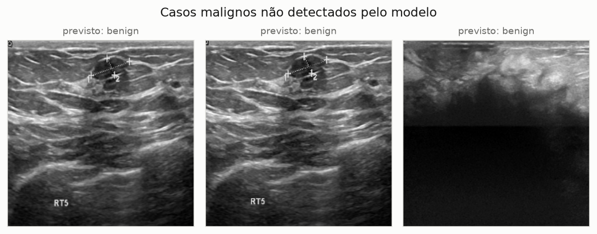
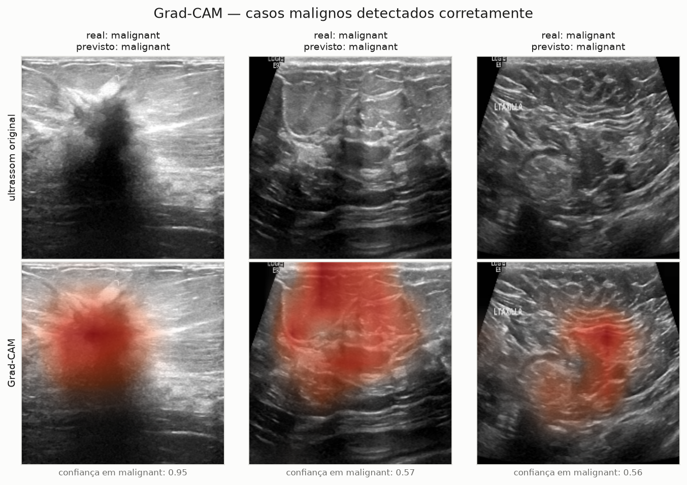
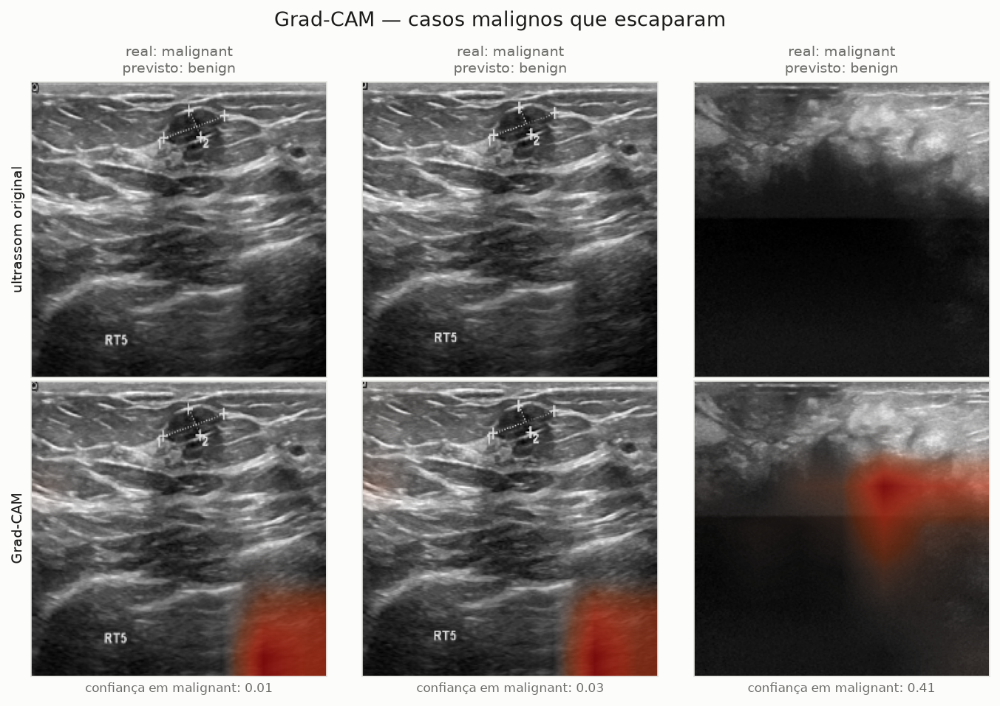
Interpretação
O modelo de imagem parte do pixel cru, sem nenhuma medida extraída por especialista — é essa a diferença em relação ao pipeline tabular, que depende de um profissional ter medido os núcleos celulares antes. Em compensação, aprende com muito menos supervisão estruturada e erra mais. Vale como demonstração de viabilidade, não como sistema clínico.